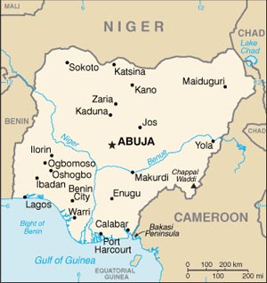

A República Federal da Nigéria é um país localizado à África Ocidental, com um território de 923.768 km2, um pouco maior que o estado de Mato Grosso. País mais populoso do continente africano, com pouco mais de 203 milhões de habitantes, sua capital é Abuja, que como Brasília, foi planejada, tornando-se centro administrativo do país em 1991. As fronteiras da Nigéria são o Golfo da Guiné a sudoeste, Benim a oeste, Níger ao norte, Chade a nordeste e Camarões a leste. A língua oficial é o inglês, sendo o hausa, o ibo e o iorubá importantes línguas nacionais faladas no cotidiano, além de outras centenas de línguas (527 no total).
O capítulo mais antigo da história da Nigéria localiza-se por volta de 800 a.C., quando o povo Nok, civilização do neolítico e da idade do ferro se estabelecem na área de Jos (norte do país). É por volta do século XI que se tem notícia do estabelecimento de cidades-estado, reinos e impérios importantes, incluindo os reinos Hausa e a dinastia Borno ao norte, e os reinos de Oyo e Benin ao sul.
O dia 1 de outubro de 1960, quando a Nigéria conquista sua independência. Desde o início, a jovem república sofre com a instabilidade política, que atinge seu auge em 1967, quando três estados do leste decidem se separar do país, formando a República de Biafra, iniciando um conflito com o governo em Lagos. A sangrenta guerra termina três anos depois, marcada pela grande violência de ambos os lados.
Em 1975, começam os projetos de mudança de capital para Abuja, e no ano seguinte, o assassinato do presidente brigadeiro Murtala Ramat Mohammed e a ascensão pela primeira vez do tenente-general Olosegun Obasanjo marcam o início da Segunda República. As alegações de fraudes, protestos políticos e golpes de estado seguem por toda a década de 80 até a tomada de poder do general Sani Abacha, que exercerá o poder até sua morte, em 1998. O ex-presidente Obasanjo é eleito em 2003, e em 2006 é proibido pela suprema corte do país de se reeleger. Ainda hoje a Nigéria vive episódios de tensão étnica, política e social que emperram o maior progresso deste país que é um dos maiores produtores de petróleo do mundo.
A nação africana é habitada por mais de 500 grupos étnicos, dos quais os três maiores são os hauçás, os igbos e os iorubás. escultura em madeira e metal, em particular, enfatiza a cabeça humana, que os Yorubá consideram a fonte de vida essencial.